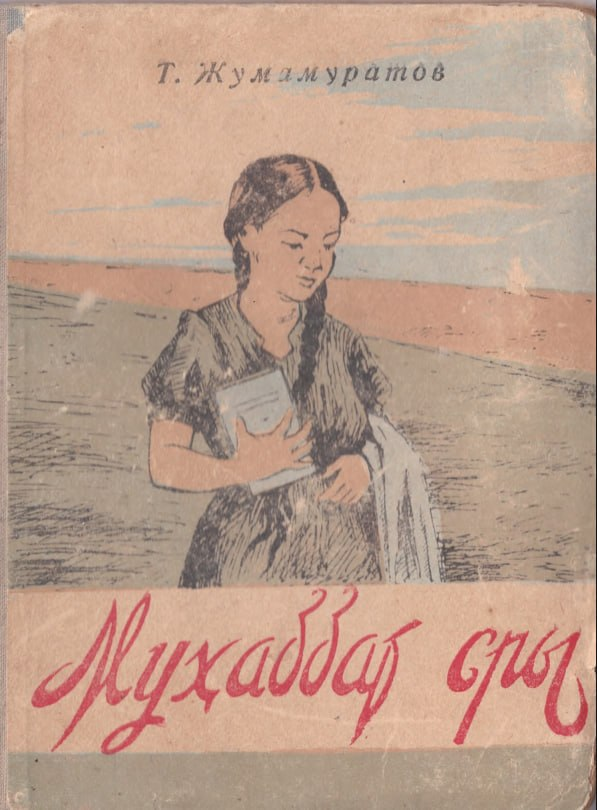

The secret of love
Published in 1958
"I realized then that there is a vast difference between the innocent friendship of childhood and love in the present moment. This feeling was getting into my soul."
- A quote from book
After getting off the plane and taking a break at my house,glad to be of service, I went to the
council of the district party committee. I asked permission to enter as I wanted to see the
secretary.
“Wait Comrade,You should enter after the guests left” said the young receptionist girl.And then
they left the room and i got the permission to see the secretary before i even said “okay”
After we shook hands he offered me a seat then introduced me as “Sakurov” I said mine was
“Mamutov”.
When I looked at him: he was well past fifty, tall, with a thick trimmed beard,
fair-complexioned.He studied my face, my military decorations and medals, with a steady gaze.He
looked somewhat familiar like I've seen him somewhere before but I couldn't quite recall and it
was awkward to asking him.I mentioned that I had been working away from home though partly and
told him I would be conducting research work, and that today I needed to visit the "Gulistan"
collective farm in this district.Right now is a good time to find a car that goes there you
should take that,I'll be going there on some unfinished business later today” he said
“Okay then,thanks”
Then the sound of a car was heard through the window.I suddenly turned around to see who it was
after the door was opened.Some woman stepped out and entered the room with permission. She
greeted us in Russian shaking hands with us both"At the 'Gulistan' collective farm," said the
Secretary, addressing the girl, "one of the farmers has fallen seriously ill.Go there and help
him. This gentleman who is in the same route as yours will also have a ride in your car.
"Alright" said the girl.
The Secretary gave her various briefings about the district's health situation. The girl placed
her bag on her knees, looked attentively, and listened carefully to everything Sakurov was
saying.
She was a woman of medium-to-tall height, graceful and well-composed. Fair-skinned, dark-eyed,
with chestnut hair. She wore a red blouse and a patterned skirt, her head uncovered, her hair
simply and neatly pinned. On her wrist, a gold watch with four faces.When the girl's eyes met
mine — just briefly, face to face — she struck me as uniquely charming. She was speaking fluent
Russian, so I hadn't initially thought she might be Karakalpak. But looking at Comrade Sakurov's
expression, I understood that she was the district's chief physician.
"May we leave now?" said the girl, once the conversation had ended. "Yes, go ahead, good luck."
The two of us left the office and walked to the car, where a driver around thirty-five years old
was waiting for a fair young woman.
"Give this lady a ride,Miss Sanem," said the girl, pointing at me, "we're going to the
'Gulistan' collective farm."
I then realized the woman was Karakalpak. I squeezed in beside her and sat down. After I got in,
the driver addressing the girl:
"My Lady, this young man suits you perfectly, people will say you two make a great couple..."
The girl, embarrassed by this teasing, replied with a smile:
"Come on now,miss,what are you sayin just drive."
The car's cabin was cramped, but pleasant. We set off, passing through the outskirts of town and
taking the open road toward the village.
What a glorious summer scene. The beauty of the season was beyond words. Along both sides of the
road, swift hares darted through the brush, and lovely girls could be spotted in the fields.
Between the telegraph poles, rows of blue-flowered flax stretched on either side of the road. In
scattered open plains, fields of cotton shimmered turquoise-green like a sea. In those places,
the bustling workers going about their labor could be seen, their caravans of carts moving along
the road throughout the day.
As I admired the beauty of nature, I kept glancing at the pretty girl beside me. She too would
steal glances at me from the corner of her eye. But the moment I looked directly at her, she
would instantly turn away and answer my questions briefly, with a warm but guarded smile.
"Where did you study?"
"In Moscow."
"When did you graduate?"
"In 1948."
"How long have you been here?"
"About a month..."
Then, after a brief silence between us:
"You must be from out of town?" I said, half-jokingly.
"No," she replied. She turned away slightly, redirecting the conversation:
"Have you traveled this road before?"
"Sixteen years ago. I spent my entire childhood in this village."
"What was it like here back then?"
"Along the road we're traveling now, there were no trees like these — it was just bare steppe
and wilderness.”
There were only scattered lone trees here and there. Now, from the looks of things, everything
has burst into bloom.
"In this day and age, sixteen years isn't a little — even one year brings great change," she
said.
At that moment the car turned off toward the village, and the girl unexpectedly reached out and
grabbed my arm. She immediately pulled it back:
"Forgive me!" she said.
"No need to apologize,is it always this bumpy?" I asked. She smiled and looked down. If only she
had kept hold of my arm I wouldn't have minded in the least if she had even embraced me. I felt
a little ashamed for wanting that. In front of me, from time to time, I caught glimpses of the
girl's own reflection in the windshield beside mine.
"When you mention this area, where exactly do you mean?" she asked again, a while later.
"We lived in the village up ahead," I said, lowering my voice a little. "We had some wonderful
neighbors. There was a child named Gulbi, a truly wonderful girl neighbor of ours. Her father
was a close friend of my father's. Gulbi was his only young daughter. They used to say: 'We'll
betrothe her to you, and when she's old enough, she'll be your bride.' I felt terribly
embarrassed by that when I was a child. One day, Gulbi fell ill and died when her daughter
Ulmaken was just seven years old. I can still remember the poor girl's desperate weeping. But
our families couldn't help her.One day, the kolkhoz party secretary and a Russian man named Ivan
summoned that little girl to the office. I took her there myself.
“Ulmeken,My darling” said the Secretary with a heavy demeanor as if he was talking with seniors.
He gently stroked her wind-blown hair. “You aren't going to become an orphan. The government
won't leave you without support and it will educate you. So we are sending you to a boarding
school. How do you feel about that?...” The young girl answered in place of an answer she simply
wept. Ivan, after thinking for a moment, said:
"I'll go."
"What a smart girl no one could compare to her!" said Ivan, kissing the girl on the forehead.
That very day,my mother sent a bundle of clothes to Ulmeken. The next morning Ivan harnessed the
cart, and they set off for the city. I went along to help carry the bags.On the outskirts of
town there lived a man named Dosa,a sheep herder. He told the cart driver:
"Sell my sheep and get Ulmekan some more clothes as well. The government provides for
everything. Even so, do it for the sake of her late father's honor."
After the cart left, the girl's eyes shone brightly inside the wagon, turning back again and
again to look behind her as they went.We also moved away from that place. Because my father had
been called up for national service in the republic.
That was sixteen years ago, I said.The girl had been listening to my story, and now her
expression changed.She fell deep in thought. "She must've hated my nonstop talking,” I thought.
Then, after a long pause, she looked at me and asked:
"Did you ever see that girl again?"
"No, I never saw her.”
"Would you recognize her if you saw her now?"
"I might."
"You think I might look like her? I am Ulmekan. You must be Aralbay himself. I recognized you
only after you spoke.” There was nothing but pure gasp and surprise for a moment.I've grown even
more fond of her than before .Her mother's memory might have rushed back or perhaps something
else,her eyes filled with tears.She reached into her bag, took out a soft silk handkerchief, and
pressed it to her eyes. My heart also started to beat faster.I realized then that there is a
vast difference between the innocent friendship of childhood and love in the present moment.
This feeling was getting into my soul.
"Are your parents well?" she asked.
"Yes, they live in Nokis."
"Oh by the way,do you know Ivan?"
"Now I do not,how could I know a guy I haven't seen" I said.
"The Secretary who was sitting at the district committee back then turns out to be Ivan who sent
me to school back then.I don't think he knows that I am Ulmeken.I intend to find the right
moment to meet him and invite her to my home."
"We should meet. I too had thought I recognized him somewhere earlier," I said.